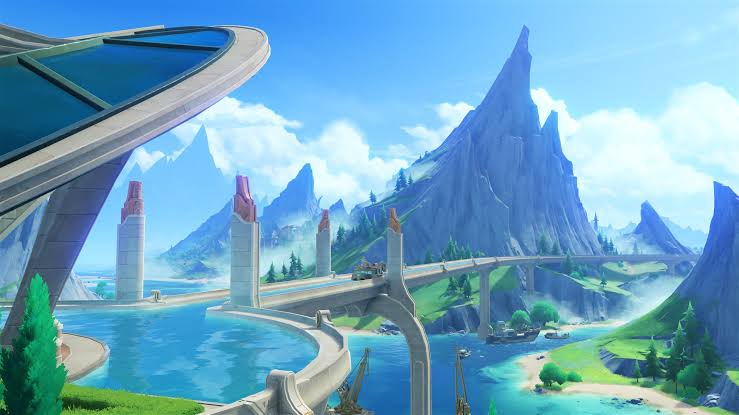
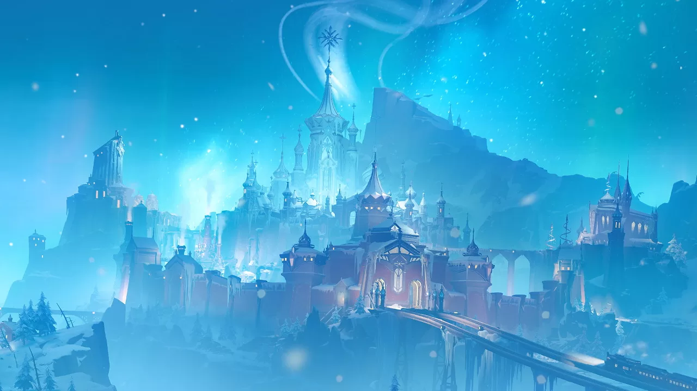

Published by Charlotte Geneaurd on the Steambird, revised by the Druzhna HQ.
HEY! Are YOU looking for new travel destinations in Teyvat?! Well, look no further! Here are some of the most beautiful, unforgettable Teyvat destinations of 2026!
Welcome to Fontaine, where you'll swim in infinitely beautiful waters and discover incredible technology.

In Fontaine, you'll find yourself surrounded by a world of bubbly underwater creatures and intricate,
aquatic architecture found nowhere as advanced in Teyvat. It is also the birthplace of world-renowned
cuisine such as those created by the famous Escoffier herself. Only in Fontaine does the "archon" appreciate
its pastries as much as its people. Fontaine is the place to go if you're looking for a place to experience
refined cuisine, rare technology, or just unforgettable theatric arts.
Fontaine is truly ideal whether you're an akedemian scholar looking to study the variety of life underwater, a
merchant getting ahead of the newest technology before it goes Teyvat-wide, or a traveler who just wants some
delicious cake. For those interested, stop by the Epiclese Opera House to see the latest theatric performances by the
famous Golden Troupe, have a go at the famous 14-slices-a-day cake at Fleuve Cendre, or read the steambird on the newest
technology and ocean news. But hurry, tourism has been increasing ever since the great flood; book your spot at
Hotel Debord before anyone else does!
Welcome to Natlan, known for its adorable dragon wildlife and perfect summer resorts.
Natlan is the land of adorable dragon wildlife and holiday resorts splashed with murals. Natlan is perfect
for those looking to stay somewhere warm and sunny; it is one of the friendliest,
most vacational nations in Teyvat. Hot springs, beautiful beaches, and infinite dragon wildlife await those who
visit Natlan. You can also kick back and watch the warrior trials, because this nation doesn't pride itself on
strength without reason. And everywhere you go... there is music and art! The holiday resortsare filled with
murals and music- you could even catch a performance by the famous DJ Xilonen if you get lucky!
And of course, its diverse landscape is always an unforgettable experience. Natlan is perfect for those
looking for a vacational resort somewhere sunny and artistic, and meet creatures and witness
incredibly beautiful nature nowhere else in Teyvat.
Natlan is ideal for families looking to vacation, warriors looking for challengers, or worldwide fans of music.
Natlan is simply perfect for those who prefer the sun, appreciate the views, and enjoy the action. Watch a tense warrior battle,
take a dip at the famous Toyac Springs or Easybreeze Resort, watch a Atopoc erupt... or just relax with some Saurians. I'd
tell you more, but I didn't pay attention during this archon quest...
Welcome to Snezhnaya, the land of unending snows filled with breathtaking arts. The perfect land.

Some might say Snezhnaya is the nation with an archon who has lost its love for its
people. Others might say Snezhnaya's bitter cold would freeze the average traveller who didn't keep on
moving. However, those who visit Snezhnaya will find themselves surrounded by warmth despite the cold nature.
There are no arts like in Snezhnaya. There are no winters like in Snezhnaya. There are no people like in Snezhnaya.
And there is no resilience like in Snezhnaya. Those who visit Snezhnaya will never be the same after witnessing
a performance at the world-renowned Korolevskiy Theater, or visiting the village of a Jack Frost, or sometimes even
witness the return of the Tsaritsa after another successful campaign. There is simply no land like Snezhnaya.
Snezhanaya... is ideal for everyone. Come witness the performance of Shining Stars Vodyanitsa and Odette. Come witness the
snow-capped mountains and gorgeous frozen lakes. Walk through the streets of the Everfrozen Earth, and learn that Snezhnaya is
as beautiful as it has always been. Despite recent events, it is COMPLETELY safe to visit, and all travelers are highly welcomed...